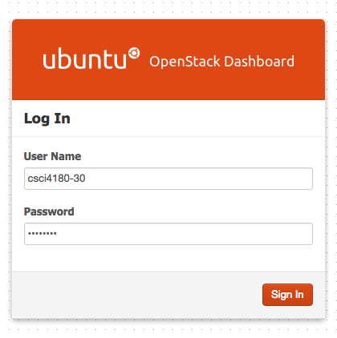

mtyiu@cse)In Assignment 1 (Part 1), you need to configure Hadoop in fully distributed mode on all your assigned virtual machines. This tutorial covers basic VM management on OpenStack, which is our official platform for development and grading. For the instructions of configuring Hadoop, please refer to the next tutorial by ZHANG Mi.
Your job: Configure Hadoop in fully distributed mode on 3 VMs on our OpenStack platform
For simplicity, we call the 3 VMs vm1, vm2 and vm3. The following figure shows the architecture of our required deployment:
The roles of each VM are as follows:
vm1: (master) namenode, jobtracker; (slave) datanode & tasktrackervm2: (slave) datanode & tasktrackervm3: (slave) datanode & tasktrackerNow we are almost ready to get your hands dirty. Before we log in to the OpenStack Dashboard, you need to prepare:
Navigate to http://137.189.89.214/dashboard/ or http://pc89214.cse.cuhk.edu.hk/dashboard/ (both URLs point to the same server) and log in with your user name and password.

There are two approaches to log in to the VMs:
In public key authentication, two files will be generated, namely the private key and public key. The public key is stored inside the machine, while the private key is kept in a separate place as it is required to log in.
In our OpenStack platform, the key generation is done for you. You just need to request for a keypair from the dashboard, and then you can download the private key.
Step 1. Navigate to "Access & Security" panel and select "Create keypair".
Step 2. Pick a keypair name
Step 3. Download the private key (*.pem). You will only have one chance to download the private key so please keep it carefully!
Step 1. Navigate to "Images & Snapshots" panel and select Ubuntu Server 12.04 (i386). Other operating systems are not accepted in our assignment.
Step 2. Fill in the details as follows:
vm1.#!/bin/bash echo '----------------------------------' if [ "`cat /etc/shadow | grep root | cut -d: -f2`" == '!*' ]; then password=`dd if=/dev/urandom bs=1 count=320 2> /dev/null | tr -dc a-z2-9 | head -c8` echo "root:$password"|chpasswd sed -i 's/PasswordAuthentication no/PasswordAuthentication yes/g' /etc/ssh/sshd_config /etc/init.d/ssh restart > /dev/null echo "Your root account is ready." echo "Username: root" echo "Password: $password" echo '' echo 'Please keep it well/change it, or you will risk losing your assignment work!' echo '----------------------------------' fi
flavor.mini. You can only use this one since you have limited resource quota.1 here. (Well...you can try to create more at the same time, but according to my experience it does not always work!)default security group. It allows you to access the VM using SSH.Step 3. The system will create the VM for you immediately. You can see the status of the VM in the "Instances & Volumes" panel.
If you prefer using public key authentication, you can simply omit this part.
The shell script that we pasted in the User Data field is for obtaining the root password from the log. After the VM is launched, you can view the log from the dashboard and get the password.
Step 1. Navigate to "Instances & Volumes" panel and select the VM you just created.
Step 2. Select the "Log" tab.
Step 3. The password is located near the end of the log. If you cannot find it, try to view the full log by clicking the button on the top right corner
We are finally ready to SSH into our VM! As mentioned above, we have two methods to log in. I will demonstrate them separately.
For Windows users, you need to use PuTTY. Specify the server host, user name, and port number as follows.
137.189.89.214 OR pc89214.cse.cuhk.edu.hkroot122XX (see below)For Mac/Linux users, open your terminal and type: ssh root@137.189.89.214 -p 122XX where 122XX is the port number (see the table below)
Windows users can try this guide to log in using PuTTY. But, switching back to password authentication makes your life easier...
For Mac/Linux users, open your terminal and type: ssh -i [path to the private key file] ubuntu@137.189.89.214 -p 122XX where 122XX is the port number (see below). Note that the private key file must have a permission 400 (only readable by owner) - use the command chmod 400 [path to the private key file] to change permission.
We set up port mapping on the cloud controller (pc89214) such that you can access the VMs inside CSE network. The remapped port number is calculated as follows:
If your instance IP is 10.10.11.x (which you can find in the "Instances & Volumes" pane of the OpenStack Dashboard), then the remapped port number is 12200 + x.
Examples:
| Instance IP | Port number for accessing the VM |
|---|---|
10.10.11.2 |
12202 |
10.10.11.88 |
12288 |
10.10.11.184 |
12384 |
After that, you should see the following screen:
For simplicity, we will use the root account to configure the VM such that we do not need to type sudo all the time. If you are not logged in as root, type
sudo su -
To change the password, use the command passwd and follow the instructions.
All machines in our CSE network needs to use a HTTP proxy to access the outside world. To do so, type the following commands:
echo 'export http_proxy=http://proxy.cse.cuhk.edu.hk:8000' >> ~/.bashrc echo 'export https_proxy=http://proxy.cse.cuhk.edu.hk:8000' >> ~/.bashrc
To take effect immediately, log out and log in again, or type:
source ~/.bashrc
Some packages may be outdated so it is a good idea to update them at the beginning. Now, type
apt-get update apt-get upgrade
Java Development Kit (JDK) is required for Hadoop so we need to install it first. Now type the following commands (note: you need to confirm the operations for these commands):
add-apt-repository ppa:webupd8team/java apt-get update apt-get install oracle-java7-installer
Check whether Java is installed properly:
java -version
As we need 3 VMs in total, we need to create more instances in OpenStack. Now, repeat all the steps starting from the section "Launching a VM" until you complete the configuration of all VMs.
/etc/hostsThe last thing you can do before the next tutorial is to set up the hosts file. This file is used to map host names to IP addresses.
Now, edit the file "/etc/hosts" and append the following lines (change the IP addresses to the IP addresses of your VMs):
10.10.11.2 vm1 10.10.11.3 vm2 10.10.11.4 vm3
Repeat these operations on ALL of the VMs.
scpThere is a very useful command called scp that allows you to copy file from one machine to another using SSH. The command is almost identical to the oridinary cp command:
scp [local file path] [remote server host]:[remote file path (default is home directory)]scp [remote server host]:[remote file path] [local file path]asg1/ at sparc1.cse.cuhk.edu.hk: scp *.java sparc1.cse.cuhk.edu.hk:asg1/
src" in the current directory to the home directory at linux1.cse.cuhk.edu.hk with user name mtyiu: scp -r src/ mtyiu@linux1.cse.cuhk.edu.hk:(Note: You can use the above two commands to copy files from your VMs to other remote servers.)
test.txt from a department UNIX/Linux machine to your VM (whose IP address is 10.10.11.8) using the root account: scp -P 12208 test.txt root@137.189.89.214:(Note: The port number is specified using
-P and it MUST appears right after the command scp and before the source file.)That's all of VM management on OpenStack. Next week you will learn how to configure a Hadoop cluster.
Find me at the Facebook group if you have any problems concerning VM management.